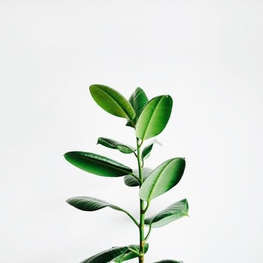
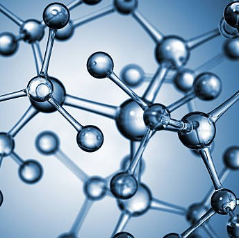
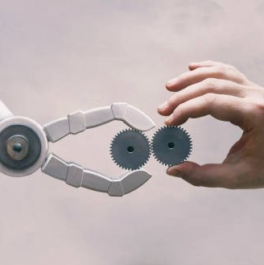
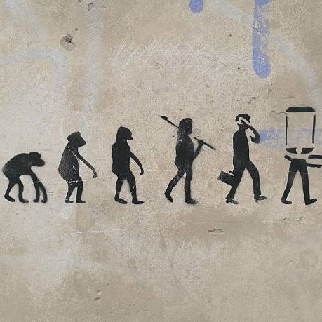
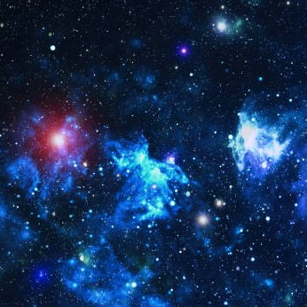

Learn more about
our various adventures





Ecology
As we learn more and more of the impact humans are having on the planet,
the more
important it becomes that scientists explore how to create a
sustainable future not just for
humans but for the whole planet. In our
ecology section of the museum, we unpack the dangers
we currently
face including global warming,extinction of species, and pollution. But
we also
focus on the positive ways we can all contribute to a brighter future.
Biology and Medicine
From micro-organisms to the human body, major breakthroughs
in
biology are
offering us unique
insights into the great Wonders of the tiny world.For many
people their life expectancy is much
longer and their quality of life much
improved, thanks to the Growthof our understanding of
medicine. Over a
series of exhibits we explore the history of medicine and take a look at
some
major breakthrough sincluding the discovery of penicillin and the first
heart transplant.
Robotics and AI
The information revolution is here and robotics and
artificial intelligence are the science of the future.From useful home applications of AI to
industrial
uses
of
robotics, the future is here. You can even say hello and shake the hand of Rob the Robot.
Evolution
For centuries, philosophers and scientists have wrestled
with the question of our origins. Where do we come from and how did we get here?Since Darwin
proposed
his theory of evolution
we have had a frameworkfor exploring and understanding our place in this world.Discover origins of
life
on
this planet and
how the species we
know today have evolved our time.You can also take some time to meet a few of
the
creatures who
didn’t survive, including our Woolly Mammoth, the Dodos, and a number of dinosaurs too.
Cosmology
Explore the wonders of our cosmos. Our fantastic exhibition,‘The Sky Above Us’,
explores the night sky and what we
can see
and know about the universe around us. We’ll locate the various constellations and galaxies that can be
seen
and learn a
bit about
the early navigators who used the stars to travel by.Follow the journey of our solar exploration: from
early
Arab traders,
to Galileo’s telescope,
on the latest exploration of the planets in our solar system.